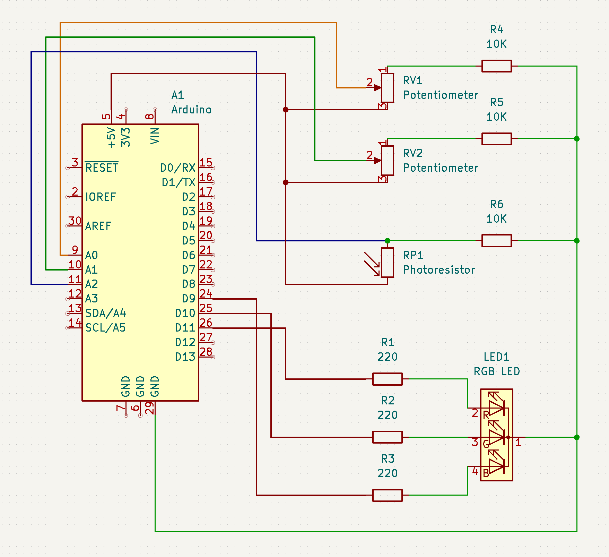
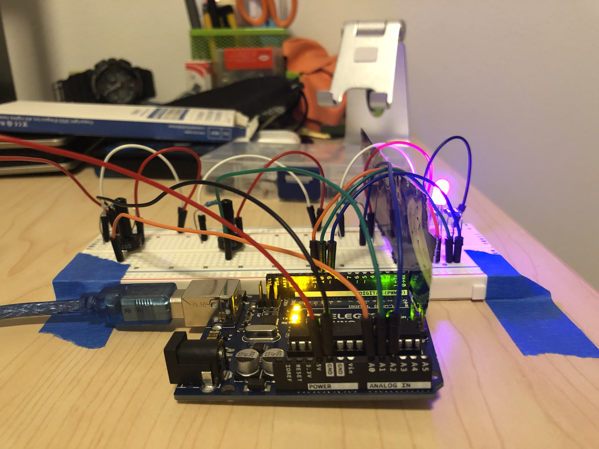
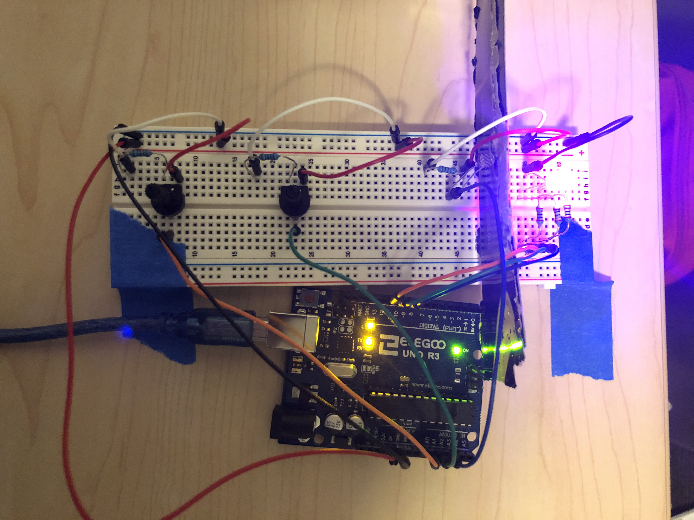
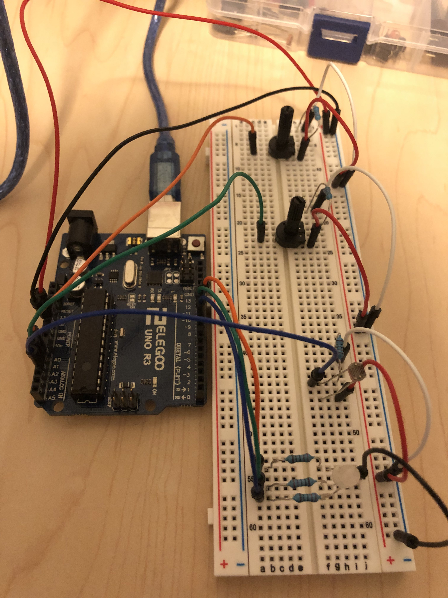

Richard's Assignment 3!

Here is all the documentation for assignment 3!

This set up uses two potentiometers and one photoresistor to create a controllable RGB LED. The potentiometers can be used to alter colour intensities
while the photoresistor is used to make the LED blink or stay lit consistently.
Calculations: The photoresistor and potentiometers both uses a 10K resistor to create a variable voltage. The Arduino output is 5V,
and we desire a 20mA current across the circuit for the RGB LED. V = IR, where V = 5, I = 20mA, and R = unknown resistor value. The RGB LED
has 3 separate anodes for each coloured LED. The red & green LEDs has a voltage drop of 1.8V and the blue LED has a voltage drop of 3.4V.
R = V / I
R = (5 - 1.8) / 0.02 = 160 (Green and Red LEDs)
R = (5-3.4) / 0.02 = 80 (Blue LED)
I have chosen to use a 220 ohm resistor for all 3 legs as it will keep the current in the circuit under the
recommended amount, allowing the RGB LED to operate with good stability.
Additionally, the photoresistor and potentiometers act as voltage dividers in the circuit, allowing the output voltage to be a fraction
of the input's. The potentiometer's output can be read through Arduino's analogRead, and mapping the value to 0 - 5. The normal readind
hovers at around 500 when turned to maximum, which translates to about 2.44 Volts. At minimum, it reads 1023 which translate to the full
5 Volts of the input.
NOTE: I added a cardboard divider so the intensity of the LED won't mess with the photoresistor.
  
Breadboard setup.
Code for this input and output set up
int B = 9; // Set Blue to pin 9
int G = 10; // Set Green to pin 10
int R = 11; // Set Red to pin 11
/* Loop through pin 9 - 12 to initiate them all as outputs */
void setup() {
Serial.begin(9600);
for (int i = 9; i < 13; i++) {
pinMode(i, OUTPUT);
}
}
void loop() {
int redVal = analogRead(A0); // Read A0 and store value as int. This will control the Red intensity
int blueVal = analogRead(A1); // Read A1 and store value as int. This will control the Blue intensity
int blinking = analogRead(A2); // Read A2 and store value as int. This will control the blinking behaviour
redVal = constrain(redVal, 550, 1000); // Constrain A0 value to be between 550 and 1000
blueVal = constrain(blueVal, 550, 1000); // Constrain A1 value to be between 550 and 1000
int redOut = map(redVal, 550, 1000, 1, 255); // Create new int for Red (1 - 255) based on A0 value
int blueOut = map(blueVal, 550, 1000, 1, 255); // Create new int for Blue (1 - 255) based on A0 value
/* If the blinking value (A2) is larger or equal to 250 (always true if no outside interference is introduced), the RGB LED
will use the A0 and A1 inputs to map an analog output between 1 - 255 for both colours. These values can be altered by
using the potentiometers to increase or decrease the output voltage. Green value stays off. If the blinking value (A2) is
smaller than 250 (photoresistor covered by something, etc), the LED will blink repeatedly, switching on and off. */
if (blinking >= 250) {
analogWrite(R, redOut); // R pin and displaying Red intensity with redOut (1 - 255)
analogWrite(B, blueOut); // B pin and displaying Blue intensity with redOut (1 - 255)
digitalWrite(G, LOW); // Green stays off
}
else if (blinking < 250) {
analogWrite(R, redOut);
analogWrite(B, blueOut);
digitalWrite(G, LOW);
delay(200); // Delay to create blinking effect
analogWrite(R, 0);
analogWrite(B, 0);
digitalWrite(G, LOW);
delay(200);
}
/* Serial monitor test prints, used to double check code functionality and output values. No delay given to make LED fading
more apparent. */
Serial.print("redVal = ");
Serial.print(redVal);
Serial.print("\t redOut = ");
Serial.print(redOut);
Serial.print("\t blueVal = ");
Serial.print(blueVal);
Serial.print("\t blueOut = ");
Serial.print(blueOut);
Serial.print("\t blinking = ");
Serial.println(blinking);
}